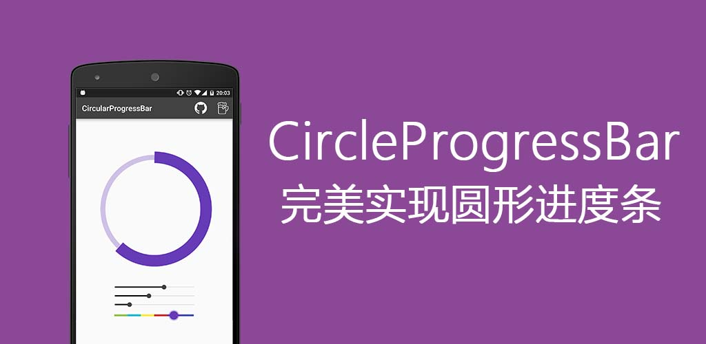

使用方法
首先，你需要导入模块项目或者添加依赖类库：
dependencies {
compile ' online.osslab:CircleProgress:1.0.0'
}样式文件
<online.osslab.CircleProgressBar
xmlns:circle="http://schemas.android.com/apk/res-auto"
android:id="@+id/circleProgressBar"
android:layout_width="wrap_content"
android:layout_height="wrap_content"
circle:background_color="#FFCDD2"
circle:background_width="5dp"
circle:progress_color="#F44336"
circle:progress_width="10dp" />图形属性：
- circle:progress_value (integer) 默认值：0
- circle:progress_color (color) 默认值：BLACK
- circle:background_color (color) 默认值：GRAY
- circle:progress_width (dimension) 默认值：7dp
- circle:background_width (dimension) 默认值：3dp
代码构建
CircleProgressBar circleProgressBar = (CircleProgressBar)findViewById(R.id.myCircleProgressBar);
circleProgressBar.setColor(ContextCompat.getColor(this,R.color.progressBarColor));
circleProgressBar.setBackgroundColor(ContextCompat.getColor(this,R.color.backgroundProgressBarColor));
circleProgressBar.setProgressBarWidth(getResources().getDimension(R.dimen.progressBarWidth));
circleProgressBar.setBackgroundProgressBarWidth(getResources().getDimension(R.dimen.backgroundProgressBarWidth));
int animationDuration = 2500; // 2500ms = 2.5s
circleProgressBar.setProgressWithAnimation(65,animationDuration); // 2500ms = 2.5s演示示例
360应用市场 - 小米应用商店 - 豌豆荚 - 应用宝 - 安卓市场

联系作者
开发许可
Copyright 2016 Lopez Mikhae
Licensed under the Apache License, Version 2.0 (the "License");
you may not use this file except in compliance with the License.
You may obtain a copy of the License at
http://www.apache.org/licenses/LICENSE-2.0
Unless required by applicable law or agreed to in writing, software
distributed under the License is distributed on an "AS IS" BASIS,
WITHOUT WARRANTIES OR CONDITIONS OF ANY KIND, either express or implied.
See the License for the specific language governing permissions and
limitations under the License.